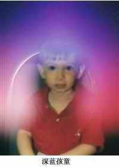

|
俄罗斯科学家所了解的“深蓝孩童”
 据俄罗斯《真理报》12月8日报道，据俄罗斯社会科学院的科学家们称，地球上现在似乎存在一种新的人种----“深蓝孩童”。他们自称有超能力，可以看到灵异现象，能预测到将要发生的事情；他们的共同特征是智力很高、直觉性强，非常敏感等；从人体能量摄影的图片中发现，代表精神力的蓝色，在他们身上特别明显，因此被称为“深蓝孩童”。对此，多数科学家不以为然。 预言孩童将拯救人类 据古代玛雅历法记载，地球由始到终分为五个太阳纪，分别代表五次浩劫，分别为：洪水浩劫，有人认为是圣经所说的诺亚方舟；风蛇浩劫，世上的建筑物被风蛇吹毁；火雨浩劫，大地遭受天降火雨之祸；地震浩劫，地球遭受强烈地震的灾祸。这四个浩劫都已经应验，而第五个浩劫就是世界末日，依据玛雅历法推算就是 2012年12月22日这一天。这天太阳和地球形成一条直线，好像箭头一样指向银河系中心。据说，只有那些智力达到“深蓝孩童”水平的人们，才能逃脱末日之劫，并预言：孩子们将拯救人类。 关于“深蓝孩童”的说法有很多例子。比如拉脱维亚就有一个漂亮的小女孩，她喜欢诉说自己夜晚在宇宙中漫游的景况。小女孩五岁的时候，她的父亲惊奇地发现她知道关于宇宙的很多知识。尽管他不大相信小女孩说的话，但是当他修理自己那辆旧拖车的时候，却总是能从小女孩那里得到一点提示。他说：“我不知道她怎么做到的，但是她总是知道车到底哪里出了问题”。 俄罗斯研究人员宣称1994年以后出生的孩子有5%属于“深蓝孩童”，这可以从他们能量摄影图片上身体周围的蓝色光环得到证明。这些孩童的内脏器官功能已经有所改变；他们的免疫系统能力比常人强几倍，对疾病完全免疫，甚至能抗艾滋病；他们的DNA也不同，可能发生了基因变异。科学家们推测说，可能由于基因变异的关系，地球上数以千计的居民已经不再属于“旧人类”，一个新的种族正在诞生，尽管这个过程进展缓慢但是却实实在在的发生着。 2012年对这些深蓝儿童有特殊的意义。根据玛雅人的预言，2012年太阳和地球形成的直线指向银河中心的时候，将会发生所谓的“伟大变革”。上述这个位置将会终结世界的三维模式，地球上的人会有机会住在四维世界里。但是机会只给那些思维已经扩展到新境界的人———“深蓝儿童”。 最近深蓝儿童的现象变得很常见。仔细观察一下你们的儿女。研究人员声称，出生在1994年以后的孩子95％都是深蓝儿童。这个迷人的形容词起源于身体周围特殊气流的颜色。这些孩子的内脏器官有与众不同的功能，他们的免疫系统比普通人强好几倍。他们有一种不寻常的突变类DNA。换句话说，从DNA改变的角度来说，数百万地球居民不是人类。新的人类缓慢但的的确确正登上世界的舞台。 著名的神秘主义者德伦瓦罗·梅尔希塞德（DrunwaloMelhisedek）主张，我们情感和精神的身体，产生了一个特殊反应，导致现代孩子的DNA 突变。这种反应是我们身体发射出来的一种波状物质。新的救生信息就藏在我们行星的潜意识中。换句话说，每个人都能得到。深蓝的传播就是发生在我们眼前的惊人现象。能够意识到精神力量冲击的任何人都能跟随深蓝儿童的指引。关于孩子将领导人类救赎的古老预言就要实现了。 或许你自己也是深蓝儿童，因为深蓝现象开始于20世纪90年代初期。但是你无法召唤一两个奇迹，或是能透过墙壁看东西。这没关系，因为深蓝力量不全靠奇迹。有深蓝天赋的人在某个专门的实际用途上非常聪明。他们可以回忆起早在他们的母亲怀孕之前，他们是如何挑选父母的。他们可以教他们的父母一些简单的圣经真理，比如说如果你不再想钱的话，你挣的钱已经够花了，那为什么还要担心钱的事。这些孩子的目标是达到精神高度。 值得注意的是，这些深蓝儿童的行为举止可能变得像亡命之徒一样疯狂，也可能就像是个天使一样安静的人。但是有一点很清楚，他们的心理特征和行为模式是新颖而且不寻常的。因此，应该发展和应用教育的新方法。我们不能忽略新一代人的需要，否则这些孩子会精神不稳定、思想混乱。你必须牢记，他们可是打开新纪元的先锋，所以他们需要我们的支持。 同时，奇迹的改变会导致一个“副作用”，那就是对疾病完全免疫。总之，每个孩子都是神童的一天正在慢慢靠近。 “深蓝孩童”的心理特征和行为模式十分独特和新奇，因此他们需要新的教育方式；你不能忽视他们的需求，否则可能会导致这种新人种智力和思想发生混乱。他们可能是开启一个新时代的先锋，因此需要我们的支持。“深蓝孩童”这种现象在我们眼前发生的很多，任何意识到自己精神力受到影响的人都可以走“深蓝孩童” 这条路。 鲍里斯：“深蓝孩童”的典型 在俄罗斯伏尔加格勒地区，1997年诞生一个不同寻常的小男孩。当他的母亲娜杰日达.基普里亚维夫在一个风和日丽的早晨生下他的时候，一切都显得有点怪异。母亲说：“一切发生的太快了，以至于我还没有感觉到任何疼痛，鲍里斯就出生了。当护士抱给我看他的时候，这个小子正用一种妇科医生的眼神盯着我看，但我知道刚出生的婴儿是不可能集中注意力看任何事物的”。当她将鲍里斯带回家以后，发现这个孩子更加不同寻常。他几乎从来不哭，也从未生过病；八个月大的时候，他就能说出整句话，没有任何语法和发音错误；父母给他的玩具，他也能利用几何学原理正确地组装起来。 当鲍里斯两岁的时候，他开始用蓝色和紫罗兰色涂抹一些东西。心理学家检测他涂抹的结果称，他可能正试图画出一种人散发出的光环。还不到三岁，他就可以告诉父母一些关于宇宙的知识。母亲说：“他能说出太阳系所有行星的名字，甚至是人造卫星的名字；还能数出星系的名字和数量。起初，我发现这有点令人恐惧，我想我的儿子是不是精神有问题。但是我决定检验一下这些名字到底对不对，当我找到一些天文书籍后，我震惊地发现他所说无误”。 关于这个“儿童天文学家”的各种说法在鲍里斯的家乡迅速传播开来，他成了当地的名人。人们都很好奇，他是怎么知道这么多事情的。鲍里斯愿意告诉来访者宇宙外的文明；他说古代人类有3米多高；还向人们预言了未来的气候变化以及全球的一些变化。每个人对小男孩讲述的东西都很感兴趣，但是没人愿意相信这些故事。为了安全起见，父母决定为他施行洗礼，他们认为这个孩子可能受到邪恶神灵的诱惑。但是不久后，鲍里斯又开始诉说人们所犯下的罪孽。他会拉住大街上一个迎面而来的人，要他戒掉毒品；告诉过往的成年男人，不要欺骗自己的妻子；这个小预言家还警告人们即将来临的灾难和疾病等等，他的这些行为令他的父母很尴尬。 娜杰日达后来注意到，儿子经常会感到难受，她甚至也能感受到儿子所受到的痛苦折磨。当库尔斯克核潜艇下沉的时候，鲍里斯全身疼痛；当发生“别斯兰人质事件”的时候，他更加痛苦不堪，那些天他甚至拒绝去学校。当被问到“别斯兰人质事件”那些天的感受时，他说感觉好像心里着火一样，因为他知道“别斯兰事件” 的结果会很惨。但是对于俄罗斯的未来他感到很乐观：“这个国家的情况会慢慢改善，但是整个地球可能会在2009年和2013年遭受两次与水有关的大劫”。 今年夏天的时候，俄罗斯社会科学院地磁和无线电研究所的科学家们拍到了他身上的光环。弗拉迪斯拉夫－卢戈夫金教授说：“他有着深蓝色的能量光谱，这代表他是一个快乐而拥有高智商的人。人脑最与众不同的能力是它可以储存人的经历、情感、思想以及一些宇宙空间信息。甚至有一些个别人，还能描述出宇宙空间。我认为，每个人都可以通过精神渠道与太空接触”。 卢戈夫金教授说，在特殊工具的帮助下，测出人类潜在的一些超能力不是不可能。现代世界各国科学家都在进行广泛的研究，试图解开超能力孩童的秘密。他说： “很明显鲍里斯就是‘深蓝孩童’的一个代表，他肩负着改变我们星球的特殊使命。在中国，印度，越南等国我都看到过这样的孩子。我敢确信将来创造新文明的一定是他们”。 但是，也有很多人持不同意见。医学界认为，这些孩子可能患有“注意力不集中症”；心理专家建议，多聆听孩子们的声音，让他们觉得能够被人接受，就能有效解决“深蓝孩童”的问题。著名的神秘主义者德林瓦奥－梅尔斯德科则坚持认为，这种情况可能是因为现代孩子们的基因发生突变，引起孩童们的精神和智力特殊反应。他说：“这可能是我们身体自身散发出的一种波状辐射，也可能是我们地球磁场产生的作用，每个人都可以成为‘深蓝孩童’”。 灵媒所了解的“深蓝孩童” Indigo Child这个名词由灵媒及共知感觉(synesthesiac)者Nancy Ann Tappe所解释，★她根据某些人的显现於外的某些光环颜色，及所拥有的人格特质，而将之统称为深蓝小孩（Indigo Child）。 通常每个宇宙年将伴随存在著某种主要光环颜色的人类，例如现代许多成人的光环颜色为蓝色或深蓝（靛色），而拥有这两种光环颜色的人类正是适合从蓝紫色年代（Violet Age）转换至深蓝色年代（Indigo Age）所需的??的光环将为深蓝色（或另译为靛色）--- Understanding Your Life Through Color 1982 根据Tappe,深蓝现象已被记录为存在於人类社会中，是最令人兴奋的改变之一，而深蓝色标签代表了某些过去十年内诞生的人类行为之能量吗？这种现象发生於全球各地，深蓝光环将一一取代其它颜色，而深蓝小孩通常拥有大而清澈的眼睛，聪明异常，记忆力佳，早熟，犟烈地依直觉行事。进入千禧年的这些小孩拥有敏感，知觉的灵魂，目的为帮助地球改变振动的能量，他们是人类通往未来的桥梁。
根據Peggy Day及Susan Gale，早在Tappe之前，這些新興的深藍小孩早由Edgar
Cayce率先提出。此外，深藍小孩（The Indigo Children）是克里昂（Kryon）的代言人Lee
Carroll及及妻Jan Tober的共同著作書名。Carroll主修經濟，曾經營生意三十年，有一天他拜訪一位靈媒，並進而認識了新時代邉樱珻arroll創建自己的信仰，並自此開始到世界各地演講、旅行，推廣〝自療（self-help）〞的理念，同行的Tober是位靈療者，也是位爵士樂歌手
(Krider 2002)。 克里昂提到的“深蓝孩童” |